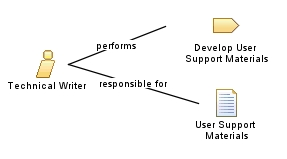

| Role: Technical Writer |
 |
|
Relationships
 |
||
| Primary Performs | ||
|---|---|---|
| Modifies |
|
|
Main Description
Staffing
| Skills |
Playing the Technical Writer requires experience and/or training in technical writing. The role may also require experience or training in developing help systems and/or Web sites. Some background knowledge in the domain being documented is also desirable. Good communication skills are important, since playing the Technical Writer is often required to interview developers, testers, and users in order to elicit correct and applicable documentation. |
|---|---|
| Assignment Approaches |
The Technical Writer role can be assigned in the following ways:
|
Licensed Materials - Property of IBM |